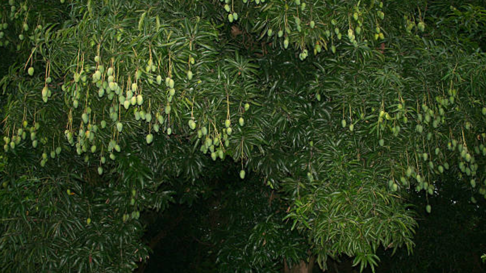

Fresh, Juicy, Healthy.
100% Organic, vivid varieties of Mangoess grown in Kashmir aka The Heaven of Earth.
ABOUT US
Mangoes, often hailed as the "king of fruits," are tropical stone fruits renowned for their vibrant flavor, juicy flesh, and rich nutritional profile. Originating in South Asia, mangoes have been cultivated for thousands of years and are now grown in many parts of the world, including India, Southeast Asia, Africa, and the Americas. Their taste can range from sweet to slightly tart, depending on the variety, and they are typically enjoyed fresh, though they are also used in a myriad of culinary applications such as smoothies, salads, desserts, and chutneys. Mangoes are not only delicious but also packed with essential nutrients like vitamins A and C, dietary fiber, and antioxidants, which contribute to overall health, including enhanced immune function, improved skin health, and better digestion. Their unique blend of sweetness and acidity, coupled with their aromatic fragrance, makes mangoes a beloved fruit globally, symbolizing summer and tropical luxury.
VARIETIES
Kesar Mango
Kesar mango, often referred to as the "Queen of Mangoes," is a popular variety of mango primarily grown in the Girnar region of Gujarat, India.

Hapus Mango
The Hapus mango, also known as Alphonso mango, is one of the most sought-after varieties of mangoes in the world.primarily grown in the Ratnagiri.
Dasheri Mango
The Dasheri mango, often spelled "Dasher" in some contexts, is a highly prized variety of mango originating from India, have originated in the northern part of India.
Rajapuri Mango
The Rajapuri mango is a popular variety of mango known for its large size, sweet taste, and juicy flesh. It is primarily grown in the Indian state of Maharashtra, particularly in the regions of Ratnagiri and Devgad.
Langda Mango
Langra (or Langda) mango, originating from Varanasi (formerly Banaras) in India, is a renowned variety known for its unique flavor and distinct characteristics.

Badam Mango
The Badam mango, also known as Badami or Karnataka Alphonso, is a popular variety of mango primarily grown in the Indian state of Karnataka.
OUR SERVICE

Fresh
We deliver fresh Mangoes with a 100% guarantee of freshness.

Fast
We deliver your orders as fast as possible, delivery procedure begins as soon as Mangoes is plucked from tree.

Satisfying
We guarantee 100% customer satisfaction. We do our best to make your purchase experience smooth. But if we mess up somehow you will get compensated for every inconvenience.